Notes for CS2040S
Mainly questions that I encountered during my study for CS2040S
Lecture 1 & 2 : Java and Overall Data Structures
- [U] How to implement a File System?
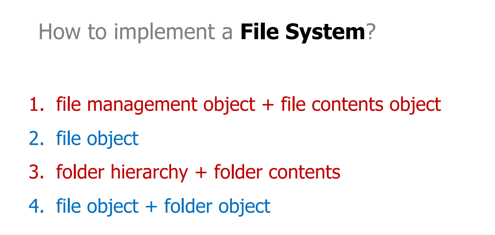
1. Objects represent state (“nouns”), not actions (”verbs”)
2. What after folders?
3. Objects should be unitary, without dividing functionality.(What does this mean and why?)First Principal of JAVA: Everything is an object
A class is a template for producing an object.
An object is an instance of the class.
Second Principal of JAVA: Everything has a type
charAt(int index)
substring(int begin, int end)
toCharArray()
length()
compareTo(String otherString)
compareToIgnoreCase(String otherString)
equals(Object anObject)
1 | class File implements IFile |
1 | // Explain with a comment |
Behaviour is public, Data is private.
regular variables/functions are PER OBJECT
static variables/functions are PER CLASS // cannot access member variable
Java program’s main method has to be declared static because the keyword static allows main to be called without creating an object. If omit the static keyword, it can still compile.
Why is it incorrect to call Java "pass-by-reference" (should be called pass-reference-by-value instead)? In the following programme, i and j behaves differently. For j, lineA simply changes the address of the parameter j0 is pointing to. Hence, the value in j in main function does not change.(Think about the stack and heap structure!)
1
2
3
4
5
6
7
8
9
10
11
12
13
14
15
16
17class MyInteger() {
public int value;
//constructor omitted
}
main(){
MyIntger i = 10;
MyInteger j = 10;
addOne(i);
otherAddOne(j);
//after execution: i.value = 11; j.value = 10;
}
addOne(MyInteger i) {
i.value ++;
}
otherAddOne(MyInteger j0) {
j0 = new MyInteger(j0.value + 1); //lineA
}f(n) = O(n) and g(n) = O(log n), what is h(n) = \(f(n)^{g(n)}\) ? the constat matters in a exponent! Cannot tell because g(n) = k log(n) matters in this situation.
1
2
3
4
5
6
7
8
9
10
11
12
13
14
15
16
17
18
19
20
21
22
23
24
25
26
27
28
29
30
31
32
33
34
35
36
37
38
39
40
41
42//I don't know how I got O(n log n) out of this but the correct answer is O(n)
public int meanFunction(int n) {
if (n == 0) return 0;
return 2 * meanFunction(n / 2) + niceFunction(n);
}
// This is O(n log n) instead of O(n ^ 2)
// j*=2 and j += 2 are different
for (int i = 0; i < n; i++) {
for (int j = 1; j < i; j *= 2) {
System.out.println("!");
}
}
// This is O(n ^ 2)
//string operations take o(Length) time(Strings are immutable!)
for (int i = 0; i < n; i++) {
s += "?";
}
//Improvement on the above code:
StringBuilder sb = "";
for (int i = 0; i < n; i++) {
sb.append("?"); //O(1)
}
return sb.toString();
//The order of growth is T(n),
//T(n) = SumOf(T(i), from 1 to sqrt(n)) + sqrt(n);
//Since T(n) is an increasing function,
//T(n) <= sqrt(n) * T(sqrt(n)) + sqrt(n)
//we can guess that T(n) = O(n)
//Another wat to think is write out a few T(1), T(2), ... first
//Or from the trend of T(n) increases, guess that T(n) = O(n);
//For more efficient algrithm, see Sieve of Eratosthenes
public static boolean isPrime3(int n) {
if (n<2) {
return false;
}
for (int i=2;i<=sqrt(n);i++){
if (isPrime3(i) && isDivisible(n,i)) {
return false;
}
}
return true;
}- Abstract Data Types (ADTs) are interfaces, which are specifications for behaviors without any implementation. E.g. Stack, Queue, Dictionary, Set, Map
- Data Structures are concrete implementations of ADTs. E.g. Array, Linked List, Binary Tree, Hash Table, Heap
- An ADT can be implemented by more than one data structure (E.g. Queue can be implemented using either an array or a linked list)
Linked List
- Advantages (compared to an array)
- Variable size
- Can easily add/delete elements anywhere
- Disadvantages
- Difficulty in random access
- Not guaranteed to be stored together in memory
- Advantages (compared to an array)
Lecture 3 & 4 : Peak Finding & Searching
[U] 2D Peak Finding: How to PROVE that it works?
Applications of binary search: Think of binary search whenever:
- There is a sequence of "monotonic function" in blackbox. That is , for each v[i], for i <= k, it returns false, for i >= k, it returns true.
- We try to find the k which is the seperating point of a "valid" value. (e.g. the "finding the pieces of homework-per-hour" problem 1 )
Lecture 5 & 6 : Sorting
BogoSort
- BogoSort Running Time
1 | Repeat: |
What is the expected running time of BogoSort?
Ans: O(n * n!) // The n is important!
- Quantumn BogoSort
Remember QuantumBogoSort when you learn about non-deterministic Turing Machines. What?
- Maybe BogoSort
MaybeBogoSort(A[1..n]) 1
2
3
4
5Choose a random permutation of the array A.
If A[1] is the minimum item in A then:
MaybeBogoSort(A[2..n])
Else
MaybeBogoSort(A[1..n])
I guess it's something like
$\sum_{k = 1}^{n} (k-1) * (k-1)!$[U]But then, What is the bigO notation of this thing?
[U]Additionally, what is the difference between n! and \(n^{n}\)? What is the difference between n * n! and (n+1)! ?
Stirling Apporximation:2
by this approximation, we can say that
O(log(n!)) == O(nlog(n))
- [U]
- [U] List of the stability, runtime and performance difference on nearly sorted and random arrays of different algorithms
Classic Sorting Algorithms
BogoSort
1 | repeat n times: |
Selection Sort
1 | for j ¬ 1 to n-1: |
Insertion Sort
1 | InsertionSort(A, n) |
In this case, since the insertion work is done from nearest element to key(backwards), it behaves differently in a sorted array
[U] Average-case analysis:
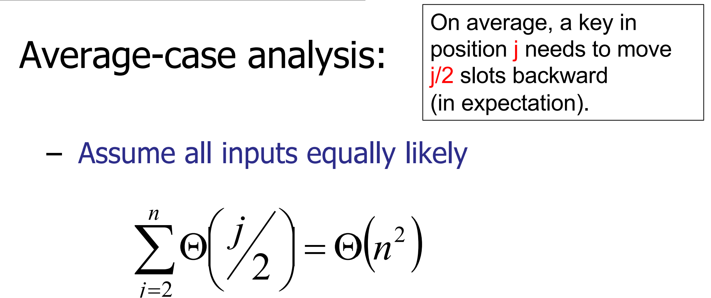
On average, a key in position j needs to move j/2 slots backward (in expectation).(WHY?)
MergeSort
1 | MergeSort(A, n) |
For the iterative MergeSort, we will sort the array in groups of power of 2. In other words, we will first sort the arrays in pairs, then merge into 4’s, 8’s and so on, until we have merged the entire array
[U] Master Theorem? Akra–Bazzi Method ? ## Summary
| Features | Bubble Sort | Selection Sort | Inerstion Sort | Merge Sort |
|---|---|---|---|---|
| Time Complexity | O(n^2) | O(n^2) | O(n^2) | O(n * log(n)) |
| NearlySorted ? Random | O(n) < | = | O(n) < | = |
| Space Complexity | O(n) | O(n) | O(n) | O(n) (No need to allocate new arrays, can you previous ones instead) / O(n * log(n)) when it's MergeSort iteration |
| Stability | 1(swap only when elements are different) | 0(e.g. [2, 2, 1]) | 1(A[i] > key not >=) | 1(if implementation is designed carefully) |
[U] Find a permutation of [1..n] where:
• BubbleSort is slow.
• InsertionSort is fast.
Or explain why such array does not exist
How do you count space?
• Maximum space every allocated at one time?
• Total space ever allocated.
[U] How “close to sorted” should a list be for InsertionSort to be faster?
Slowest Sorting Algorithm 1
2
3
4
5
6
7Step 1:
– Generate all the permutations of the input.
Step 2:
– Sort the permutations (by number of inversions).
Step 3:
– Return the first element in the sorted list of
permutations.
Quicksort
Introduction
1 | QuickSort(A[1..n], n) |
1 | partition(A[1..n], n, pIndex) // Assume no duplicates, n>1 |
- What if there are duplicates?
[U] Two way partitioning (what happens for numbers on the right side? Lec 6 slides)
One way partitioning - maintaining 4 parts of an array. * Quicksort is not stable
[U] Is it possible to make quicksort stable by using an extra array to partition rather than do swapping?
[U] Why is quicksort faster than merge sort?
[U] What if we use triple pivots
Time complexity for random chosen pivot.
For an array of length n with k distinct arrays, given a good pivot choosing algorithm, the time complexity would be O(n log k)
Analysis on a good pivot
T(n) = T(n-k) + T(k) + n
Suppose \[\frac{1}{10} n < k < \frac{9}{10} n\]
Time complexity: O(n * h), where h is the time of partition
\[(\frac{9}{10}) ^ {h} * n >= 1\tag{1}\]
- Paranoid Quicksort(partition until a good partition)
1
2
3
4
5
6
7
8
9
10ParanoidQuickSort(A[1..n], n)
if (n == 1) then return;
else
repeat
pIndex = random(1, n)
p = partition(A[1..n], n, pIndex)
until p > (1/10)n and p < (9/10)n
x = QuickSort(A[1..p–1], p–1)
y = QuickSort(A[p+1..n], n–p)
[U] Non-paranoid quicksort works too?
[U] Why is it more important to fool the adversary then for the algorithm to behave well on average cases(we would need time to do randomization and find the A[k], but we don't need time to get A[1]) Or, since the possibility of choosing a bad pivot is small, is the efficiency of doing paranoid quicksort better then randomly choosing?
Probability Theory on choosing a good pivot
We only execute the repeat loop \(\frac{n}{k}\) times (in expectation) 3
Quicksort Optimization
Switch to InsertionSort for small arrays.
Halt recursion early, leaving small arrays unsorted. Then perform InsertionSort on entire array. (InsertionSort is fast on almost sorted arrays, about O(n))
Java QuickSort Implementation uses a two pivot quicksort.
- Sort the k pivots in the pivot array K
- Do QuickSelect(e, K) on every element e in the original array (partitioning)
- Recurse.
The time complexity is T(n) = O(nlogk) + k * T(n / k) which is O(n log n). The performance of 2 and 3 pivot QuickSort are actually better than regular QuickSort because 2-pivot quicksort takes benefits of modern computer architecture.
Order Statistics
Find \(k^{th}\) smallest element in an unsorted array:
- sort and return A[k]
- Minimize sorting
You can even do paranoid sorting
1 | Select(A[1..n], n, k) |
Time Complexity: O(n)
Other Sorting Algorithms
Counting Sort
Counting Sort is useful for sorting arrays that contains integers from 0 - M, where M is relatively small.
- Time complexity: O(n + M)
[U] Check the website!
BitSort(?)
- Regular version
- In-place-sorting agorithm for arrays of 0s and 1s: Do Quiksort Partition on the array, with two pointers, one at each side:The 0-pointer will advance to the right up until it finds the first 1; vice versa.
- For an integer of k bits, do k times the In-place-sorting, starting from the highest bit.
- time complexity is O(kn). However! since integers are stored in 64 bits, only when n > \(2^{64}\), this would beat Quicksort!
- Optimization:
Don't represent integers in binary, rather, in M - base numbering systems, where M is realtively small. Now, do Counting Sort \(log_M\) n times. the time complexity would be O(n * logM n). However, it still requires n to be relatively large.
TradeOff: Space! Lets say we use 8-base algorithm. It will take 256 Integers worth of space to do Counting Sort! Also the fact that the sorting is not in-place might take longer than you think ([U] Test it out!)
Lecture 08 Trees
Dynamic Data Structures
Operations that create a data structure - build (preprocess)
Operations that modify the structure - insert - delete
Query operations - search, select, etc.
Tree Basic Concepts
[U] What determines shape? • Order of insertion • Does each order yield a unique shape? NO – # ways to order insertions: n! – # shapes of a binary tree? ~4n (Catalan numbers: Catalan Numbers Cn = # of trees with (n+1) nodes Cn = # expressions with n pairs of matched parentheses)
Successor:
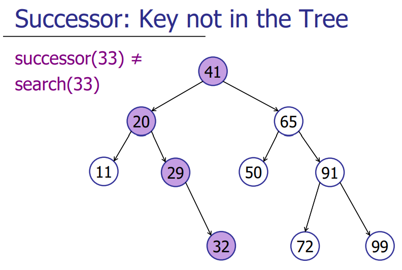
1
2
3
4
5
6
7
8
9
10
11
12
13
14
15Successor(int key) { // successor function for key (in / not in tree)
int result = search(key); //either return successor or predecessor
if(result > key) return result;
else return SuccessorKeyInTree(result);
}
SuccessorKeyInTree(int key) {// search for successor when key is in tree
if (key has right child ) {
return rightChild;
}
while ((parent != null) && (child == parent.rightTree)) {
child = parent;
parent = child.parentTree; // note that here child has become parent
}
return parent;
}Deleting
1
2
3
4
5
6
7
8
9
10if (key.childNumber == 0) {
//simply delete.
}
else if (key.childNumber == 1) {
//make the child of key substitude child
}
else {
//key has two child -> key has right child -> the successor is the min in the right child -> sucessor has no left child.
substitude successor with its child and substitude key with successor.
}
Keeping Trees Balanced
Concept
Key definition: A tree is balanced if h = O(logN) (By default: log(n) –1 ≤ h ≤ n)
- Augment
- Define Balance Condition
- Maintain Balance
AVL Trees
Proof of Balance
node v is height-balanced if |v.left.height – v.right.height| <= 1
A height-balanced tree with n nodes has at most height h < 2log(n)
Proof: = proof that every height-balanced tree with height h has at least n nodes (Since every height-balanced tree with height h has at least n > 2h/2 nodes, every height-balanced tree with n nodes has height h < 2log(n).)
$$n_h >= 1 + n_{h-1} + n_{h-2} >= 2 * n_{h-2} >= 2^{n/2} * n_{n-n} = 2^{n/2}$$
Interesting Property: a maximal imbalanced AVL tree(AVL treewith the minimum possible number of nodes given its height h.)has all its subtrees to be maximally imbalanced.
What else can we store instead of height: height difference between the left and right subtrees! [U] How do we implement that? how do we find out whether the tree is not balanced?
Proof: if S(h) = the minimum possible number of nodes: S(h) = S(h − 1) + S(h − 2) + 1.
Maintaining Height-Balance
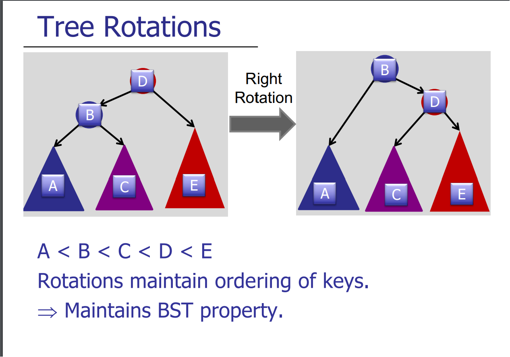
After insertion, start at bottom, work your way up.
Assume A is the lowest node violating valance property. Assuming that A is left heavy:
- B is balanced
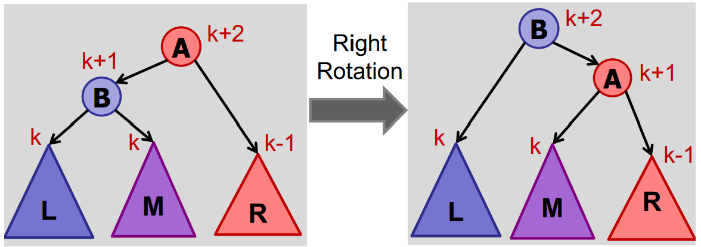
- B is left-heavy

- B is right heavy


[S] what about nodes higher than that?
- In Case 2 & 3, we reduce the height by 1, thus the upper must be balanced. ([U] Why doesn't that unbalance the balanced node?)
- In Case 1, Case 1 would never appear when doing an insertion.[S] What about deletion!
For deletion, we walk up tree, check for balance and rotate every node if needed. It is NOT sufficient to only fix lowest out-of-balance node. [U] Why?
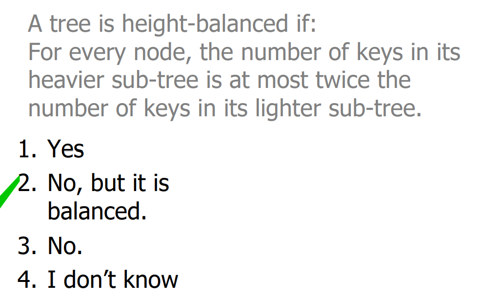
[U] Using rotations you can create every possible tree shape?
[U] What if for deletion, we don't rotate immediately but leave it in the tree and do rotations afterwards? (Amortized performance)
[U] Instead of storing height from every node, only store difference in height from parent - What's the use?
Augmenting Trees
Properties: properties that contains information about the subtrees (or information that can be updated by walking up/down the tree) tends to be easy to maintain; properties that contain the full information about the tree tend to be hard to maintain overall(e.g. if I want to do selection, what properties do I need: weight of subtree - information that can be uploaded VS index - full information about the tree) (L10 1h10min)
Dynamic Order Statistics
[U] Compare the time complexity of using sorted array and a tree? Additionally, compare the behavior of storing index and storing weight in a tree?
Find the rank of a node
1
2
3
4
5
6
7
8
9rank(node)
rank = node.left.weight + 1;
while (node != null) do
if node is left child then
do nothing
else if node is right child then
rank += node.parent.left.weight + 1;
node = node.parent;
return rank;Maintaining weight during insertion and rotation.
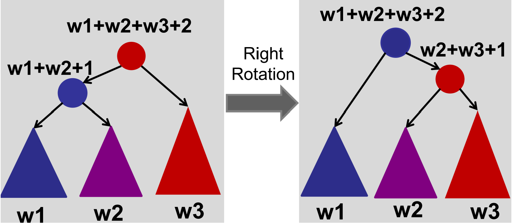
Tree Traversal
DFS and BFS
Introduction
[U] Wait, where did this come from?
Non-recursive BFS and DFS
Stack - DFS
1 | push(root); |
Tree Operation conclusion
- modifying:
- insert: O(h)
- delete: O(h)
- Query Operations:
- search: O(h)
- predecessor / successor: O(h)
- findMax / findMin: O(h)
- Traversal: O(n)
Trie
- Costs(h for the height of trie, L for the length of word)
- search: time - O(L)
- store: space - O(L) What does prof mean by tries take up more space because it involves more overhead here?(L10, p90)
- String dictionaries
- Searching
- Sorting / enumerating strings
- Prefix queries: find all the strings that start with pi.
- Long prefix: what is the longest prefix of “pickling” in the trie?
- Wildcards: find a string of the form “pi??le” in the trie.
Interval Queries
Goal:
- Solutions where space is linear (or near linear) in the number of things stored (i.e., intervals).
- Operations are logarithmic in # of things stored.
Augment
store the maximum of right end point!
Implement
search:
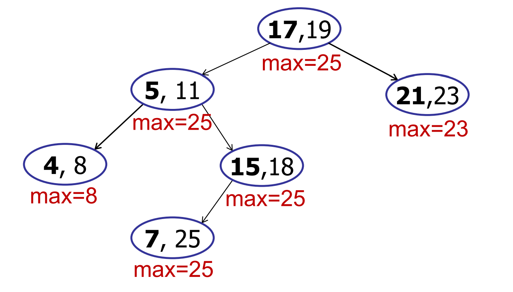
when we walk down the nodes to(17,19), the information that we need are: 17(left interval), 25(max = left subtree)
Case 1: x > 25 (max of left subtree):
Go right. (the node is either in right tree or not in tree!)
Case2: 17 < x <= 25
Go left. (there must be atleast one node that contains x!)
Case3: x < 17
Go left. (there is 0 possibility that the right subtree contains x!)
In three cases we are safe to go (the direction we go contains the key / the direction we don't go does not contain key)
insertion & rotation
easy to maintain
Others
[U] Extension: List all intervals that overlap with point?
Orthogonal Range Searching
Introduction
Are there any good restaurants within one block of me - search for the points in a given box
Sample: One-Dimension
Strategy
- Use a binary search tree and store all the points in the leaves of a tree. Each internal node stores the MAX of any leaf in the left sub-tree.

Do Search(10, 50): (Time complexity: O(log(n) + k), where k is the number of items)
- Find Split Node: the highest node that search includes both left and right subtrees(in this case, 25) O(logn)
- Do left and right traversal on the left and right tree. O(k)
- Left Traversal: The search interval for a left-traversal at node v
includes the maximum item in the left subtree of v.
1
2
3
4
5
6
7
8
9
10
11
12
13
14
15
16
17
18LeftTraversal(v, low, high) {
if (low <= v.key) {
all-leaf-traversal(v.right);
//change all-tree-traversals to total += v.right.ount
//if just need to know how many nodes are with the range
LeftTraversal(v.left, low, high);
} else { // left traversal on the right subtree
LeftTraversal(v.right, low, high);
}
}
RightTraversal(v, low, high) {
if (v.key <= high) {
all-leaf-traverasal(v.left);
RightTraversal(v.right, low, high);
} else {
RightTraversal(v.left, low, high);
}
}
BuildTree time complexity : O(n log n) ([U] why?)
Dynamic updates: Rotation ([U] how?)
Two-Dimension
- Idea:
- 1: Create a 1d-range-tree on the x-coords.
- 2: Store a y-tree at each x-node containing all the points in the sub-tree.

[U] don't quite understand.
k-d Tree
space partitioning data structure for organising points into a 𝑘-dimensional space
B-trees
(a, b) trees
Rules
- 2 ≤ a ≤ (b + 1)/2, where a and b refers to the minimum and maximum number of children in a internal node(not root / leaf).

every node should follow that: numberOfChild = numberOfKey + 1. For a node with k keys (v1,v2,...,vk), the subtrees(t1,t2,...,tk+1) should follow that ： First child t1 has key range ≤ v1； Final child tk+1 has key range > vk； All other children ti where i ∈ [2, k] has key range (vi−1, vi)
All leaves should have the same depth.
Manipulation
Is ab tree balanced?

Insertion:
Solution 1: (1) At first put the element in its correct place in the node (which is in sorted order)
If the node overflows, then find the median ( = if is even and if is odd ) key in that node.
Put the median key in the parent and split the current node
Solution 2: Proactive Approach
Preemptively split a node whe it is full so that it does not overflow in the future.
- Deletion:
- Case 1: Problem with Orphan Children.
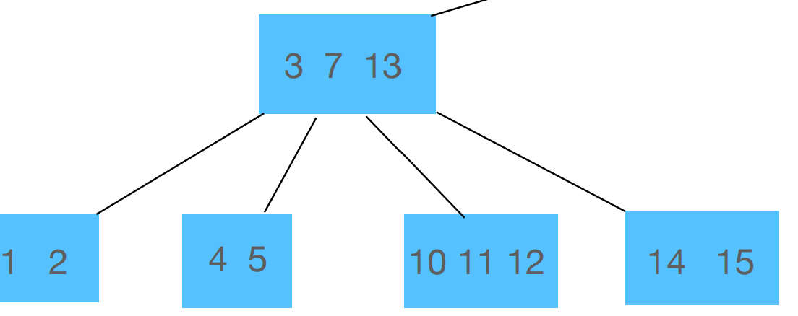
In this case, we replace the deleted node either with the predecessor or successor key- Case 2: Problem with downflow

If at least one sibling has at least a keys, then donate the key to the other sibling
If none have enough keys, then merge the two siblings and the parent together.


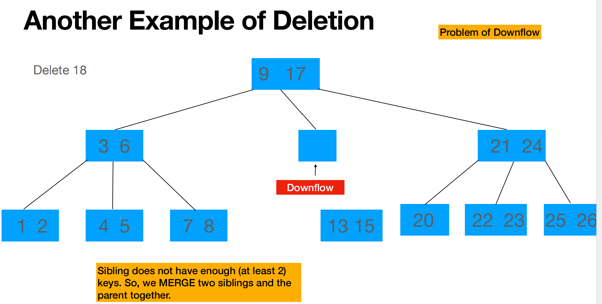
B-trees
B-trees are simply (B, 2B)-trees. That is to say, they are a subcategory of (a, b)-trees such that a = B and b = 2B.
- Cost
All the costs of searching a key list / splitting a node / merging / sharing B-tree nodes are O(1)!
The cost of searching a B-tree / inserting / deleting in a B tree is O(loga n)!
Others
- log2n = O( log10n ) Correct! We can easily switch between bases by multiplying by a constant.
Lecture 12 Hashing
Basic Concepts
Difference with trees: no comparison between keys. [U] Why do you need O(n^2) time to sort in symbol table
For
java.util.Map<Key, Value>No duplicates are allowed
Keys are immutable
1 | Map<String, Integer> ageMap = new HashMap<String, Integer>(); |
- How does java implement hashFunctions?
- hashCode should be:
reflexive, symmetric, transitive
consistent(always return the same answer)
simultanious with equals method! (returns the same hashcode if and only if two objects are the same!)
1
2
3
4
5
6
7
8
9
10
11
12
13
14
15
16
17
18
19
20
21
22
23
24
25
26
27
28
29
30// By default, returns the memory location of the object!
// In fact, it just returns some part of the memory location
static int indexFor(int h, int length) {
return h & (length - 1); //returns the last few bits
}
// Sample hashCode functions for different types of variables.
Integer: return value;
Long: return int(value ^ (value >>> 32)) //collision can happen [U]
String: return converToDecimal(String.base31())
// Mathematical calculation: think of the integer as a base 31 number
// and convert it to decimal!
// [U] Why 31? - you can quickly implement mod 31 with bit shifting operations?
// Note that "Aa" and "BB" have the same hasCode value
// Implement your own hashCode method!
public class Pair {
private int first, second;
int hashCode() {
return (first ^ second); // E.g.
}
boolean equals(Object o); // the third rule of hashCode!
}
//Implementation of the get function:
for (e in linkedList) {
if(e.hash == hash && //check if hashcode are the same
e. key == key || key.equals(e.key))
// check if memory address are the same or if they are defined equal
}
Two Good properties of a good Hash Function:
For every bucket j, there is some i such that h(key, i) = j. (make sure that you make use of all the space)
Simple Uniform Hashing Assumption: Every key is equally likely to be mapped to every permutation, independent of every other key. [U] wut? Why does linear probing violate the rule
Coping with Collision
Concept
Collision: h(k1) = h(k2), then k1 and k2 collide, where h is a hash function that takes in a key(e.g. "Hello") and returns the index where it should be stored in the array.
Chaining
Why don't we just insert each key into a random bucket?
search would be slow!
Simple Uniform Hasing Assumption: every key is equally likely to map to every bucket.
What is the maximum chain length with SUHA? - O(log(n)) ([U] Why?)
To minimize the maximum chain length, we use two function h1 and h2. store the k in the bucket with a smaller chain. This would reduce the maximum chain length to O(log log n)
Open Addressing
Concept: find the next bucket! one itme per slot and try to fill in all buckets.
Idea: probe a sequence of buckets until you find an empty one.
- h(key, i) where i is the time that you are trying (to find the slot), Do note that it may not be that h(key, i) = h(key, i - 1) + 1 and the "sequence" of objects may be arranged in random order.
Problem: Deletion! If I simply set the box to null, when I try to search after deletion, I would stop at the deleted box and not search for any element after that(we assume that search stops as the first null, since we only stores elements in order). To solve that, we use DELETED for deleted elements instead of null.
Linear probing:
Clusters! There are clusters and there is a higher probability for the next h(k) to hit the cluster
In practice, however, linear probing is faster. This is because caching!
Double Hashing!
- Use two hash functions f, g. \[h(k,i) = f(k) + i * g(k)\] ([U] Claim: if g(k) is relatively prime to m, then h(k,i) hits all buckets. L15)
Performance(assuming uniform hashing) ([U] why do you need this? Proof? L15):
if \[\alpha = n/m\], then \[Cost = \frac {1}{1 - \alpha}\]
So performancee degrades badly as \(\alpha\) -> 1
Resizing
Concept
I don't know how many elements are going to be inserted! - Grow the table!
Idea: Implement a new slot m2 and a new hash function. Scan the items in m1 (old hash table) and insert them in a new hash table - O(n)
How fast to grow the hash table?
m = m + 1: O(n^2); m = 2m: O(n); m = m^2: O(n^2)
Shrinking and growing: if(n === m), then m = 2m. if(n < m / 4), then m = m /2
Claim: Everytime you double a table of size m, at least m / 2 new items were added.
Everytime you shrink a table of size m, at least m / 4 items were deleted.
Technique of analyzing "average cost" (when some operations are cheap and some are expensive): Operation has amortized cost T(n) if for every integer k, the cost of k operations is <= kT(n)
e.g. For a list of insertions, the 5 insertions cost 5,5,5,13,7 respectively. The amortized cost = 7, where 5 < 7; 5 + 5 < 7 * 2; 5 + 5 + 5 < 7 * 3...etc
We claim that in this sense, the insert operation of a hash function has amortized cost O(1) [U] Proof
[U] What if we don't want to be the person who triggers the 2 hour hash table incrementing?
Lecture 14: Heaps
Priority Queue
Heaps
Two properties
Heap Ordering: priority[parent] >= priority[child] (different from a binary search tree!)
Complete Binary Tree:
Every level is full, except the last
All nodes are as far left as possible
Features
The maimum hbeight of a heap with n elements: floor(log n)
Storing: we store the tree in an array in BFS order. In this case, it is easier to access the last node and the root node.
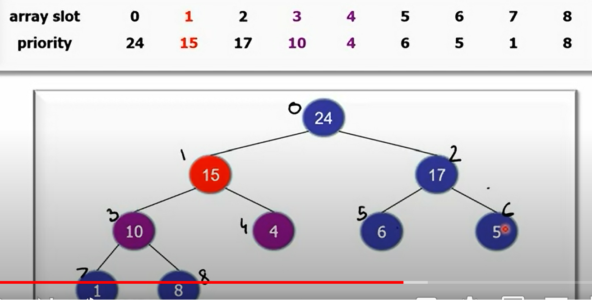
- How do we find the parent of a node? Since the tree is a Complete Binary Tree, the parent index would be: (k-1) / 2 !
Operations
Insert:
Step one: add the new leaf to the left most of the last level
bubble up: swap the leaf that doesn't satify the Heap Ordering property with the parent. [U] Why would this work
Increase Key: increase a key from e.g. 5 -> 25.
- bubble up 25.
Decrease Key : 28 -> 4
- We bubble down with the child with the bigger one (22)
Delete:
swap the node with the last node
delete the node
bubble down the last node
extractMax: output the max and delete it.
Performancee:
All these operations are O(log n)!
HeapSort
Thought1: Unsorted List -> Heap -> Sorted List
Procedure: Keep doing extractMax!
Time complexity: O(n log n). Faster than Mergesort and slower than Quicksort.
Unstable [U]
Ternary (3-way) HeapSort is a little faster
Thought 2: Heapify!
Procedure: view the array as a complete tree. Do recursion!
Base case: Each leaf node is a heap
Heapify upwards where each left and right are heaps.(by bubble down)
Code:
1
2
3
4
5int[] A = array of unsorted integers.
for (int i = n - 1 ;i >= 0; i--) {
bubbleDown(i, A);
//O(log n) but most nodes have smaller height!
}Cost:
\[\sum\limits_{h = 0}^{log(n)} {\frac {n}{2^h} O(h)} = O(n)\]
- [U] wait so why doesn't this count? Or why is heapsort consideered O(n log n)? Because to convert a heap into an array you still need O(n log n) ？
Sets
[U] I did not understand a single word he said
Problems (in tutorials)
Mountain stack
A mountains consists of n hills, aligned linearly. Each hill i, stands at a height of a[i]. Standing at hill i, you’ll see a point j kilometers away if and only if all hills from i−j to i are no taller than a[i] meters. For each hill i, determine the maximum distance you can see from it(distance is "-1" if no hill blocks your sight). (Hint: try using a stack to achieve O(n) time complexity)
Answer: Use a monotonic decreasing stack: - For
every element at index i in the array: 1
2
3
4
5
6
7
8
9
10
11
12
13boolean isInfinity = true;
While(!stack.empty) {
curr = stack.peek(); //get the top object without popping it
if(curr.height >= h[i]){
isInfinity = false;
break;
}
else {
d[i]++;
stack.pop();
}
}
if(isInfinity) d[i] = -1;
How to come up with this: Gather only the information you need! Information for any hill i that is lower than another hill j where j > i can be eliminated!
Chicken Rice Competetion :
- You have in front of you n plates of chicken rice, each plate contains n bites of chicken rice. Supppose you want to find the median chicken rice. Design an algorithm to maximize the amount of remaining chicken rice on the median plate.
- Solution 1: Run QuickSelect: on one level of QuickSelect, the expectation of time of bitten on any plate is (1 / n) * (n - 1) + (1 - 1 / n) * 1 <= 2. Thus the expected consumption of chicken rice is O(2 log n) bites.
- Solution 2: Inserting each plate into an AVL tree takes O(log n) comparisons. (However, if median is the root of AVL tree, there would be O(n) moves!)
- In fact, using a randomized algorithm, this can be solved with only O(log log(n)) bites to the median plate, but that is much, much more complicated [U]
Weight Selection(Eonomic Research):
- You are an economist doing a research on the wealth of different
generations. Each row of data you've gained consists of a unique
identifier, an age, and a number that represents their amount of wealth.
Your goal is to divide the dataset into “equi-wealth” age ranges. That
is, given a parameter k, you should produce k different age ranges A1,
A2, ..., Ak with the following properties:
- All the ages of people in set \(A_j\) should be <= the ages of people in \(A_{j+1}\).
- The sum of wealth in each set should be (roughly) the same (tolerating rounding errors if k does not divide the total wealth, or exact equality is not attainable).
You should assume that the given k is relatively small while the dataset is very large . (i.e. O(nk) < O(n log n))
Design the most efficient algorithm you can to solve this problem. Optionally, consider the case where rows can consist of the same ages, versus the case where rows have unique ages. - Solution: a weight selection problem. We are asking to find the 1/k,2/k,...,k−1/k order statistics of the weighted sum 1. Finding a single Weight Order Statistic. - First, use QuickSelect to find the median aged dataset, and then partition around the median - sum the totals on the left and right halves. (DO the sum while partitioning to save time!) If target weight > left sum, subtract left sum weight from your target weight and search on right half...etc. This is O(n) time. 2. repeat for the k - 1 targets and Do one final partitioning to build your output lists([U] why is this nessary) This is O(nk) time.
Solution 2: Instead of finding the median, we use a random pivot. Each time we partition, we keep track of the sum of the wealth to the left of the selected pivots! We do Quickselect O(k) times and each selection takes O(n) times. ([U] Needs further explanation, see tutorial slides w6 "better solution") [U] Why is this better than Solution 1?
Solution 3: Find k order statistics all at once! When random pivot was selected, say its 2 * \(\bar{w}\), then we recurse on the left to find the 1st order-statistics and recurse on the right to find the 3rd order-statistics! In this case, we get a rough overall runtime of O(n log k) ([U] Needs further explanation, see tutorial slides w6 "better solution")
[U] How about naiive solution?
Height of Binary Tree After Subtree Removal
Description: You are given a binary tree with n nodes. You are given m queries, where queries[i] asks the height of the tree after deletion of the subtree containing the ith node. What is the optimized solution?
Solution 1 : Build a tree. for each query, walk up the tree and try to update the node's height. O(log n * m) ([U] Why does the slides say its O(n * m)?)
Solution 2: Depth of a node refers to the number of edges in the simple path from root to the node
- preprocess the tree to get its depth using DFS and height using in-order-traversal.
- For ith query, we look at all the nodes with the same depth of ith
node and find the maximum height among them. The answer to the query
would be
node[i].depth + max_height. - SO how do we group the nodes of the same depth? We do this by iterating the nodes in in-order-traversal([U] wut?). For each group of nodes in the same depth, we only require the maximum height and second maximum height. To do this we need O(n) time([U] wut?).
- In this algorithm, we only need O(1) for each query. The overal time complexity would be O(n + m)
[U] There is another method based on Euler Tour Tree (which is out of syllabus of CS2040S). You may find more details about the data structure on
https://courses.csail.mit.edu/6.851/spring07/scribe/lec05.pdf and http://web.stanford.edu/class/archive/cs/cs166/cs166.1166/lectures/17/Small17.pdf.
The data structure provide a neat alternative solution and support for deleting multiple subtrees.
Safely Evaluating average pay!
- Question 1
- Come up with an algorithm that will allow the students to determine the average pay of the group without revealing their own salaries to any of the other members in the group
- Solution 1: Everyone pick a random number and add it to there salery. 1st person passes the sum to the 2nd person, the 2nd person add their sum to the number the 1st one passed ... Until everyone's sum adds up. Then they deduct the number one by one.
- Extention:
- what happens if k members of the group decide to collude and share information. Is your algorithm still able to preserve the privacy of all the members, or could the salary for some of the members be leaked
- Solution 1 will not work! the (i-1)th and (i+1)th person can easily calculate the ith people's salery! ([U] is there a way to manipulate the order of adding and subtracting such that there is no way they can do that?)
- Solution 2: Divide the salery into n pieces and each person give the ith piece of their salery to the ith people! Even if everyone in the house except for the kth person cheat and try to calculate kth person's salery, they cannot do so! ([U] How did you come up with that!)
- Way to come up with a good algorithm: [U] ?
- How you (re)define the problem
- Determines what are the metrics of success
- How to iterate a solution?
Pancake flipping!
Description: Try to serve pancakes a stack sorted by size. You can only flip the pancakes at the top of the pancake stack.

Show that any pancake flipping algorithm requires at least n flips. What do we call such properties of the problem? [U] Check out recitation 2
- A lower bound of the algorithm!
- Consider a possible worst case!
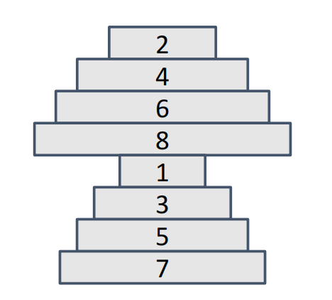
Why is this the worst case? [U] Worst case should differ for different algorithms?- Feature 1: if two consecutive pancakes in the sorted pancake stack are together in the unsorted stack then we can treat those pancakes as one pancake either with burnt side up or down based on their order. This means that if 2 4 are adjacent in the original pancake, we must use at least one flip between 2 and 4 to seperate them!
- Feature 2: If the largest pancake is at the bottom we can simply ignore it.
- By Feature 1, we need at least n - 1 flips. By feature 2, we need at least 1 additional flip to seperate the bottom one and the table! Thus the lower bound is at least n flip.
[U] Check out recitation 2 on more about pancake flipping.
DNA Swapping
- Description
- We are doing sorting when only calculating the cst of swapping subarrays. The cost of swapping subarrays of length k would cost O(k).
- What if we are sorting an array of two element? - Do mergesort!
- What if the input string comprises of arbitrary characters without duplicates.
- Wait, we can do this using the solution in 2! partition is the same as sorting an array of two kinds of elements! The time complexity is T(n) = 2 * T(n / 2) + O(n log n). [U]
Random Permutation
Given an array of n items, we need to return a random permutation of the given array.
How do we evaluate the performance of a random permutation algorithm!
- The possibility of each permuatation to appear in the array should be n!
Consider the Fisher-Yates / Knuth Shuffle algorithm: Time Complexity O(n) and Space complexity O(1)! [U] why is space complexity O(1)
Solution 2: assign a random number to each element and sort it!
- Question: what if we meet duplicate numbers?
- If the sorting is stable, simply treat the earlier occurence to be the smaller one([U] Is this still random? )
- If not, the sorting would not be stable!
Binary Counter Amortized Cost
Suppose we have a binary counter, after n increments, what is the amortized cost?
Simple answer: O(log n). But this is not the case!
Closer look: 2! [U] Seems kind of unclear
Observation: each increament would only change one 0 to 1.
Suppose each bit is a bank. When we change from 0 to 1, add 1 dollar, when we change from 1 to 0, pay 1 dollar.
[U] Check the ppt # Puzzles:
[U]Sicherman Dice
[U]Puzzle of the Week: Bubbly (Courtesy: MIT Puzzle Hunt, 2019)
[U]Treasure Island:
You choose a set of keys.
You can test whether all the good keys are in the set (and possibly
some extra keys). If even one bad key is in the set, then it fails.
Goal: identify exactly the good keys.
PotW: Gambling for Profit? (Lecture 07 p121)
Prisoners! (L10)
** Updated Until:
Lecture 11 p135
tut 2
[U] optional questions in tutorials.
[U] Check the open resourse
[U] Check this out: visualAlgo
[U] HashTable - Tutorial Slides W6 - problem 2 -credit CS2109S
[U] Optional problems in tuts and recs
There are some useful advice on midterms in Week 6 tut materal
You have n piles of homework and the ith pile has piles[i] pieces of homework. You have h hours left before all your homework is due. Try to find out the minimal k = “pieces of homework”-per-hour while finishing everything on time that follows the below constraints: At every hour, choose a pile of homework, If the pile has less than k pieces of homework remaining, you do not start on the next pile during the same hour. how you can find the minimum integer k such that you can finish all your homework withinh hours? (Hint: v[i] is the function of whether you can finish on time, and k is the seperating point. )↩︎
Another way to prove this is :
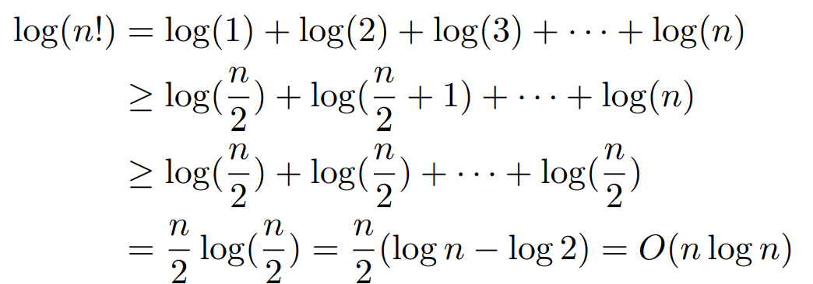
↩︎\(\color{green}{SOMETHING RELATED}\): How many flips to get at least one head? : \[E[X] = \frac{1}{2}(1) + \frac{1}{2} (1 + E[X]) \tag{1}\] (this is useful for infinity E[x] problems)↩︎